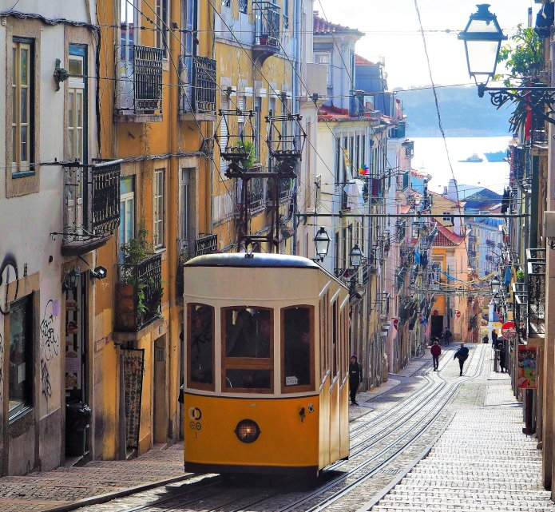

Visite Lisboa!
O Elevador da Bica percorre a Rua da Bica de Duarte Belo (o nome vem de uma bica de água que existia na região) e é um dos elevadores mais procurados pelos turistas.
Tudo isso emoldurado pela vista do Rio Tejo!
O ascensor da bica, como também é conhecido, funciona desde 1892. Assim como os demais elevadores de Lisboa, é um projeto de Raul Mesnier de Ponsard (também responsável pelo Elevador de Santa Justa).